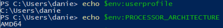
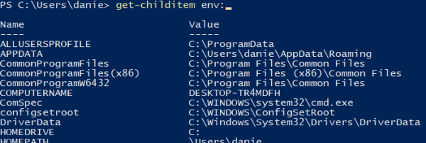

environment variables
We can refer to an environment variable with the syntax
$env:echovariable_nameexampleto output the values we are using echo that is the alias of Write-Output
Retrieve all the environmentvariablesTo get a list of all variables we can use Get-ChildItem (alias ls)
